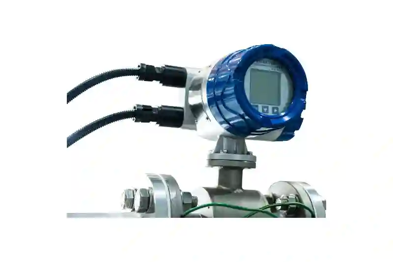
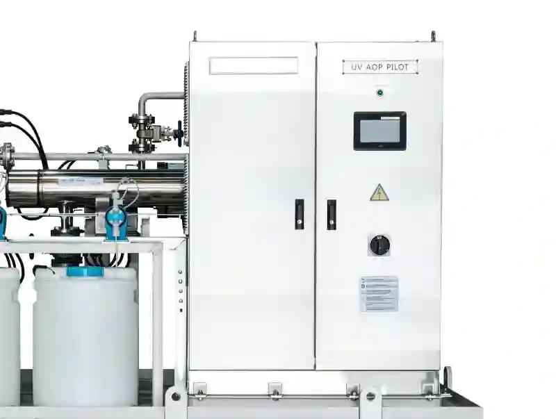
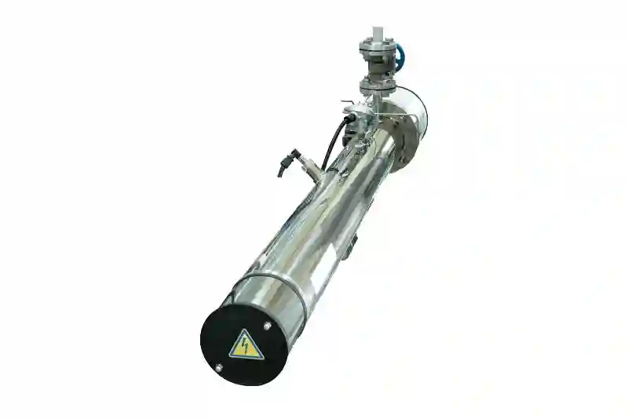
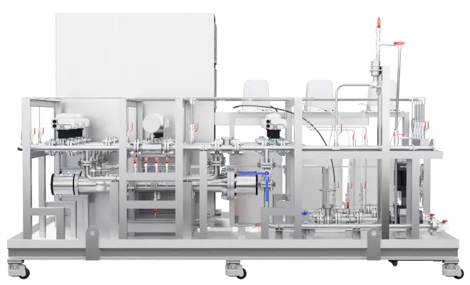

| 파일럿 테스트 설비 사양 |
|---|
| 램프 형식 | 중압 / 저압 |
| 크기 (mm) | 1,500 (W) x 2,750 (L) x 1,655 (H) |
| 중량 | 1톤 |
| 반응조 재질 | STS 316 |
| 전원 입력 | 220V 3Phase |
| 운전 온도 | LP 5-45°C, MP 5-65°C in Chamber |
| 샘플링 포트 | 총 4개 설치 (저압 및 중압 반응기 각각 입구 및 출구) |
| 입구, 출구 및 주 배관 규격 | 25A |


개인정보 처리방침: Neotec UV는 기업 고객의 상담 및 전문 서비스 문의 처리를 위해 필요한 최소한의 개인정보만 수집합니다.
수집하는 개인정보 항목: 문의 유형, 이름, 휴대전화번호, 이메일 주소 및 문의 내용
개인정보 수집 및 이용 목적: 고객 문의 검토 및 답변, 엔지니어링 상담 지원, 지속적인 고객 커뮤니케이션을 위한 상담 이력 관리
개인정보 보유 및 이용 기간: 제출된 모든 개인정보는 접수일로부터 2년간 안전하게 보관되며, 보유 기간이 경과하면 영구적으로 파기됩니다.
Cookie Policy: Neotec UV는 쿠키 데이터를 수집, 저장 또는 추적하지 않습니다. 당사 웹사이트는 정적인 정보 제공을 목적으로 설계되었으며, 사용자 추적이나 세션 정보를 저장하지 않는 독립적인 브라우징 환경을 제공합니다.